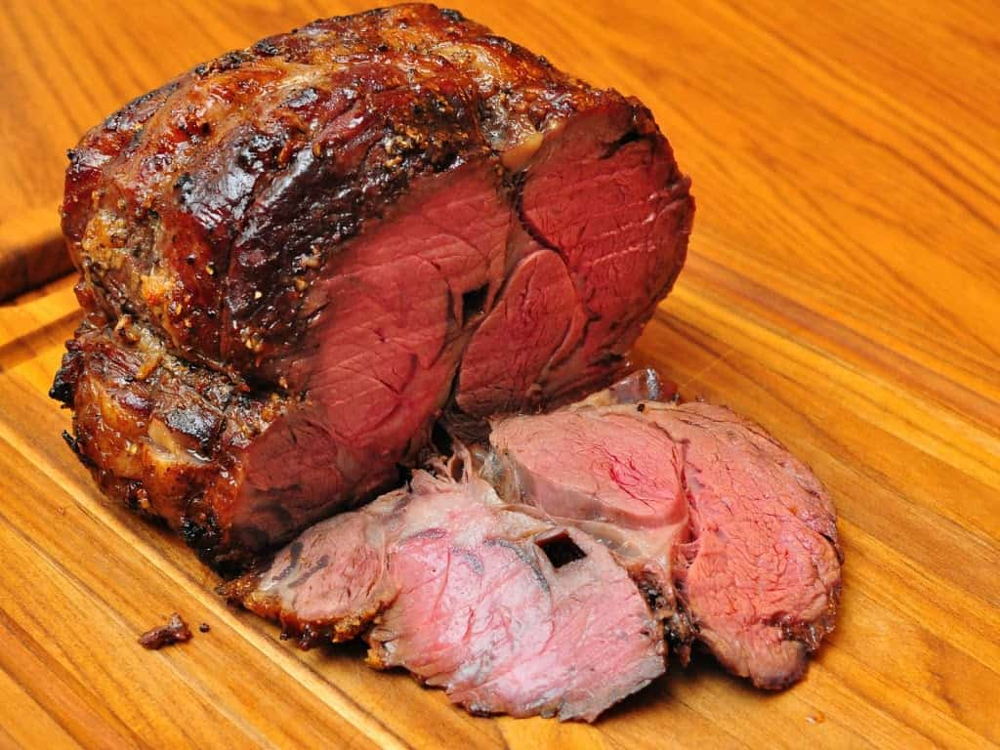

Ribeye Roast

Description
I make this every time rib eyes are on sale. Easy and delicious; there are never any leftovers! We usually cook ours medium-rare!
Ingredients
- 1 cup softened butter
- 6 cloves garlic, minced
- 1 (4 pound) bone-in rib-eye roast
- sea salt to taste
- cracked black pepper to taste
Steps
- Preheat an oven to 500 degrees F (260 degrees C).
- Beat butter and garlic together in a bowl. Poke several holes in roast with a sharp knife. Rub butter mixture all over roast and season meat with salt and black pepper. Place roast, fat-side up, in a roasting pan.
- Roast in the preheated oven for 20 minutes, reduce heat to 325 degrees F (165 degrees C), and continue cooking until roast is reddish-pink and juicy in the center, 1 1/2 to 2 hours. An instant-read thermometer inserted into the center should read 145 degrees F (63 degrees C).